私の青空
大雨洪水警報
◆大雨
雨の音が響いている。
幕が上がると、舞台は、十月のある金曜日・文化祭前日の私立七つ森学園中学校三年一組の教室。
舞台前面に校庭側の窓がある。(ただし、あるという想定で実際の舞台に窓は存在しない)
下手は教室の前、上手は教室の後ろ、舞台奥は廊下側になる。
三年一組の展示のテーマは「太平洋戦争」である。
教室は太平洋戦争に関する掲示物で囲まれている。
ただ掲示物は壁に貼られているのではなく、壁の前に立てられた衝立に貼られている。そのため、掲示物の裏側に人が入ることができる。
展示は大きく三つに分かれている。
舞台下手は戦時中の私立七つ森学園(戦時中の名称は私立七つ森高等女学校)と戦時中の少年・少女についての展示。
舞台中央は太平洋戦争全般(主な内容は特攻、空襲)の展示。
舞台上手は戦時中の大衆文化(音楽、映画、小説等)と家庭生活(食事、服装等)の展示である。
舞台上には机がばらばらに置かれていて、その上には展示の資料、作りかけの掲示物、ＣＤラジカセ、暗闇の中で展示物を照らすための複数の非常用ランタンなどが置かれている。また見学者がくつろげるように、椅子が展示物の前に置かれている。
三年一組の六人の生徒が教室の中で展示を完成させるための作業をしている。
六人の生徒は青山彩、空野翼、大場サチ、白井ユカ、雲井瞳、湧田龍之介である。
彩、瞳、サチ、ユカは資料を調べたり、模造紙に書き込みをしたりしている。
翼がＣＤラジカセを使って一九四一年（昭和十六年）十二月八日午前六時にラジオで放送された第一回の大本営発表を流す。この放送は幕が上がった後すぐに流れることになる。
「臨時ニュースを申し上げます。臨時ニュースを申し上げます。大本営陸海軍部、十二月八日午前六時発表。帝国陸海軍は今八日未明 西太平洋においてアメリカ、イギリス軍と戦闘状態に入れり。…」
龍之介がプロジェクターを通して真珠湾攻撃の映像を自立式のスクリーンに映し始める。
しばらくして翼が放送を止める。
雨の音が響いている。
ユカ 雨強くなってきたよ。なんかやばいんじゃない。
彩 ユカ、台風はまだ大丈夫だよ。
スクリーンには戦闘機が映されている。
戦闘機の下に「零戦二一型」という文字が現れる。
ユカ 零戦(れいせん) 二一(にじゅういち)型。
翼 ユカ、それは二一(にじゅういち)じゃなくて、二一(にーいち)型って読むんだ。
ユカ 翼、零戦(れいせん)って何？
翼 ゼロ戦のことだよ。真珠湾攻撃で大活躍した。
ユカ あーこれゼロ戦なんだ。ゼロ戦なら私も知ってる。で、零戦とゼロ戦、どっちが本当の名前なの？
翼 正式名は零式艦上戦闘機。ゼロは敵の使っている英語だから本当は零戦って呼ぶのが正しいんだけど、戦時中もゼロ戦って呼ばれてたみたいだね。真珠湾攻撃で使われたのがこの二一型で、日本が生んだ天才・堀越二郎によって設計されたんだ。
ユカ ゼロ戦って戦争が始まった頃は無敵だったんでしょ。
翼 そうだね。龍之介F4Fワイルドキャットを映して。
龍之介 オッケー。
龍之介がF4Fワイルドキャットをスクリーンに映す。
翼 これがワイルドキャット。戦争が始まった時に使われてたアメリカの戦闘機。
ユカ ワイルドキャットって？
翼 山猫のこと。ゼロ戦はすべての面でこいつより優れていて、空中戦では圧倒的な勝利を収めたんだ。ただアメリカも太平洋戦争中期からゼロ戦以上の機能を持った新鋭機のF6Fヘルキャットを送り込んできたからね。龍之介、ヘルキャットを映して。
龍之介 オッケー。
龍之介がF6Fヘルキャッ
後書き
「ふるさと」の後書きという名の劇
◆購入を希望する方は晩成書房、一般の書店への注文で購入できます。
２０１１年１１月発売
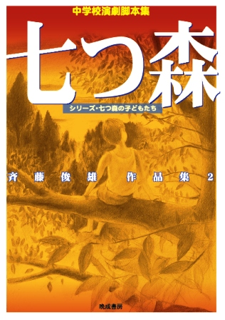収録作品は
『七つ森』
『とも』
『ザネリ』
『怪談の多い料理店』
『魔術』
『森の交響曲(シンフォニー)』
の６作品です。
題名をクリックするとあらすじを読むことができます。
◆購入を希望する方は晩成書房、Amazon、楽天、7net 、一般の書店への注文で購入できます。
・観る人に大きな感動を与えたいと願っている方。そして何より、その感動によって上演した子ども達が成長することを願っている方
・中学生が上演することで輝ける劇(中学生が演じるからこそ笑え、中学生が演じるからこそ泣ける劇)がきっとあると信じている方(信じたいと思っている方) 、そしてそれが教育であると同時に芸術であることを目指したい方
・楽しい劇がやりたい、ただ楽しいだけの劇はやりたくないと思っている方
・中学生のだれもが、一般の大人が考えている以上に素晴らしい力を持っていると(とりあえず人の前ではそう言っているのではなく)本気で思っている方
ー そんな方々に、この作品集を読んでほしいと思っています。
２００９年３月発売
 初版１０００冊が完売となり、２０１２年秋から品切れとなっています。再版の予定はありません。現在のところ作品を入手することが困難ですので、電子データで提供いたします。無料です。
初版１０００冊が完売となり、２０１２年秋から品切れとなっています。再版の予定はありません。現在のところ作品を入手することが困難ですので、電子データで提供いたします。無料です。
品切れとなって以来、多くの方から「何とかして読むことができないか」といった問い合わせをいただきました。ある地区では顧問間で脚本のコピーを廻しているとうかがいました。Amazonで中古本が高値で売られているという状況があります(一時期は１５０００円で売られていました。このサイトで脚本を無料で提供しだしてからは、そのような高値はつかなくなりましたが、現在も定価以上で売られています→
Amazon )。正直なところ、それだけの価値を与えられているということに対してうれしい気持ちもありますが、そんな高価な本を購入するしか作品を読む手段がないという状況に、ずっと心を痛めてきました。
このような状況の中、今現在、私の作品を必要としている多くの人のために、ネットで作品を無料で提供する決断をしました。なお、『夏休み』の著作権は私、斉藤が所有しております。
『夏休み』収録作品が読みたいという方はメールでoo-ruri@nifty.comまでご連絡ください(氏名、所属、読みたい脚本を明記してください。全作品を読みたいという方は遠慮せず「全作品」と書いて送ってください)。私の作品が上演できるように、協力させていただきます。脚本はメールに添付して送ります。
◆下の題名をクリックすると、「斉藤俊雄作品集 夏休み」収録作品のあらすじと脚本を途中まで読むことができます。
「夏休み」
「青空」
「なっちゃんの夏」
「ときめきよろめきフォトグラフ」
「降るような星空」
「春一番」
・「斉藤俊雄作品集 夏休み」に掲載された作者プロフィール
・「斉藤俊雄作品集 夏休み」後書き 春一番が吹いた日に〜後書きのためのインタビュー〜
この作品集がどのような思いから創られたのか、架空のインタビュー形式で紹介します。これを読むことで、サブタイトルにある「シリーズ・七つ森の子どもたち」の意味を理解していただけると思います。
キャスト メイン14名 その他 人数に制限はありません。どんなに多くとも上演可能です。
上演時間 45分〜60分
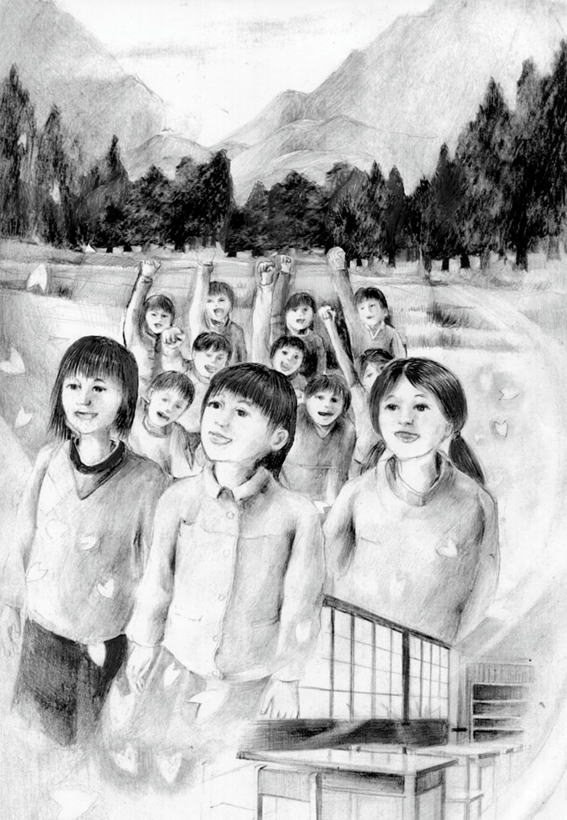自作を上演してくれた学校の一つが、津波の被害にあったことを知りました。その日から考え始めました。「自分に何かできることはないいだろうか。自分だからこそできることはないだろうか」と。そして、辿り着いたのが「ふるさと」です。
元気になれる劇が創りたいと思いました。観た人が元気になれる劇、そして、そのことによって上演した人が元気になれる劇です。
「ふるさと」は古川里美（＝ふるさと）が転校してきたことで、故郷に特別な思いを持っていなかった子ども達全員が故郷を好きになる話です。内容に震災をイメージさせる部分はあえて入れませんでした。ただただ「あったかい劇になればいい」という思いを胸に創りました。
「ふるさと」は机とイスがあればどこでも上演できる劇です。教室でも体育館でも、校庭でも上演することが可能です。音響設備は必要ありません。場面転換では子どもたちが生で歌う「ふるさと」がバックミュージックとなります。
この劇は様々な上演形態で発表することができます。演劇部はもちろん、学級劇、学年・学校劇としても上演できます。
この劇は様々な上演形態で発表することができます。演劇部はもちろん、学級劇、学年・学校劇としても上演できます。
★「ふるさと」上演の手引き
◆ 第１２回全国中学校文化祭(全国大会)栃木大会参加作品
◆２０１２関東中学校演劇コンクール金賞・創作脚本賞
◆『ふるさと』は現在、日本各地の小・中・高校のクラス、演劇部、劇団で上演されています。
脚本「ふるさと」を途中まで読んでみたい方は次をクリック 「ふるさと」
キャスト メイン９人 その他 ４人〜１０人程度まで可
上演時間 50分〜60分(プロローグの部分をカットすることで45分にすることができます)
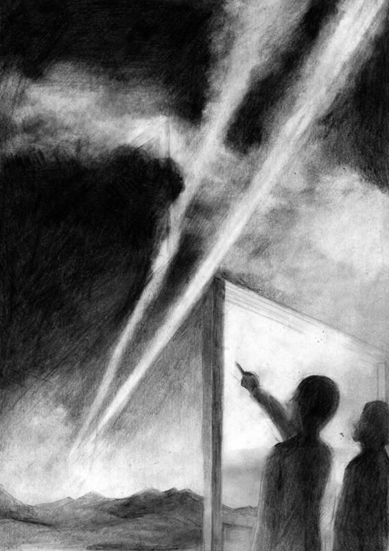 「アトム」はテレビアニメ版で（当時はテレビ漫画と呼んでいた）アトムの放送が始まった1963年（昭和38年）の物語です。同時にテレビアニメ版でアトムが誕生する年として設定された2013年の物語でもあります（原作の漫画での誕生は2003年）。 それはある意味において未来の物語であり、過去の物語でもあり、今の物語でもあります。 ただしそれは2013年という意味での今ではありません、2013年は「アトム」が上演される時には過去になるのですから。
「アトム」は50年前の歌謡曲で彩られた物語であり、「鉄腕アトム」のテーマソングが入口となり出口となる物語でもあります。
「アトム」は中学3年生の物語であり、生徒会役員達の物語でもあります。中学生の淡い恋の物語であり、淡くとも熱い恋の物語でもあり、そしてよくある友情の物語でもあるのです。
私の全作品がそこを舞台にしている七つ森の物語であり、広島の物語であり、沖縄の物語でもあります。
「アトム」はアトムを夢見た人たちの物語であり、アトムをいまだに夢見ている人たちの物語でもあります。 そしてこれはアトムとアトムの妹ウランの物語であり、アトム＝原子とその原子の一つであるウランの物語でもあるのです。そう聞くと深刻そうだと思う割には、笑い笑いで創られた物語であり、人によってはただ笑っているうちに終わってしまう物語なのです。
そして「アトム」は、次のことを観客に問いかける物語です。
「もし今アトムが生まれたら、アトムはどこに行くのだろう」
◆第１４回全国中学校文化祭(全国大会)沖縄大会参加作品
◆２０１４関東中学校演劇コンクール 金賞・創作脚本賞
脚本「アトム」を途中まで読んでみたい方は次をクリック 「アトム」
キャスト メイン８名 その他 ２人〜20人程度まで可
上演時間 50分〜55分
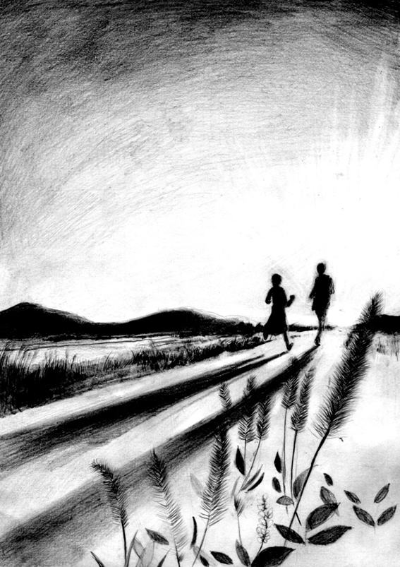体育祭の応援シーンで幕が上がるこのドラマは、走ることを描いた学園ドラマです。そして、走ることを描くと同時に走らないことも描いた学園ドラマでもあります。
ドラマの中心人物は廃部の危機にある、３年生だけの演劇部員達です。彼女たちは部の存続させるために、必死に新入部員を獲得しようとします。その彼女たちの目に留まったのは転校してきた２年生の武藤蘭という少年です。
彼は体育祭の練習をいつも見学しているのでした。彼を勧誘しようとするのは演劇部部長で生徒会長でもある野原歩美。実は、彼女も体育祭の練習を見学しています。
運動が苦手な歩美はけがを装って体育祭の練習を見学していたのです。
そんな時、歩美は武藤蘭が前の学校で駅伝の選手だったという話を聞きます。彼が以前に通っていた学校は、駅伝の全国大会の常連校だったのです。なぜそんな彼が走ることを拒むのか。そのことを軸に、ミステリーの手法でこのドラマは進んでいきます。
互いの秘密を知った後、２人は生まれ変わろうとします。そんなラストシーンで歌われるのが、「Happpy Birthday」。 このドラマはその歌声に包まれて幕となります。
このドラマは絆という言葉が好きではない２人の絆のドラマでもあります。タスキが途切れたことで切れてしまう絆ではなく、タスキが途切れたくらいでは切れない絆の物語です。
『Happy Birthday』は誕生日に新しく生まれ変わることを決意して、明日に向かって走り出すことを描いた物語です。
◆２０１５関東中学校演劇コンクール 銀賞
キャスト メイン10人 その他 ４人〜１０人程度まで可
上演時間 50分〜55分
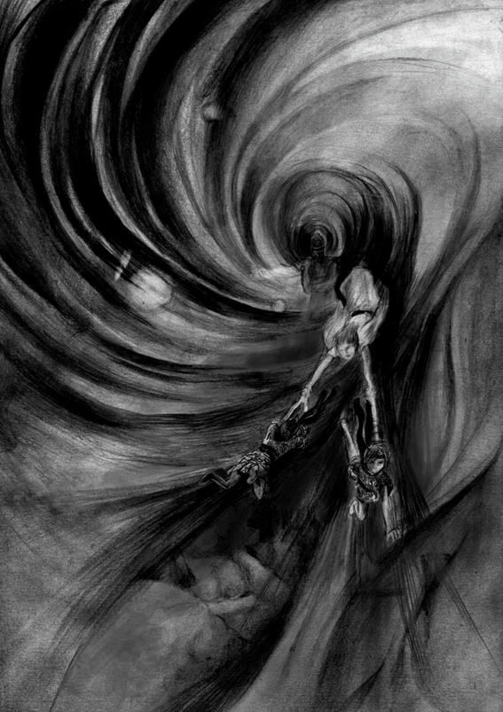 「赤と青のレクイエム」は平安時代に生きていた山姥と呼ばれる青い血を持った存在(血が青いこと以外は私達人間と同じ)と、その存在をこの世からなくしてしまおうという赤い血を持った忍者達の物語です。正確に言えばある集団が演じる「赤と青のレクイエム」の上演そのものを描いた劇です。
劇中劇「赤と青のレクイエム」の登場人物は天才的な忍術を使う少年忍者・鷹丸、未来を予知できるサヤカ、蚊を煙のように飛ばして襲わせる蚊煙の術を使うカノミ、分身の術を使う不知火、そして鷹丸の師匠で「青い月」という謎の忍法を使う月影。
山姥討伐に出かけた彼らは、山の中で菊と梅という青い血を持った姉妹に出会います。彼らの心は揺れ動きます。最後の場面で山が火を噴き舞台が赤く染まります。炎に包まれた、赤い血の忍者と青い血の山姥は手と手を取り合って、遠い未来に差別のない世の中が来ることを夢見ながら死んでいきます。
突然、客席から「そこまでだ」と声がかかり、劇が止められます。そして舞台に黒服を着た人達が何人も上がっていきます。彼らは「赤と青のレクイエム」を上演しているこの集団は、山姥の生き残りであることを観客に伝えます。そして、彼らは現団員達に襲いかかります。彼らが傷つけた劇団員の手から青に血が流れ出ます。劇団員は「血が青ということで差別をしないでほしい」と声を限りに観客に訴えます。しかし、黒服の人達によって劇団員全員が舞台から連れ去られてしまうのです。舞台に誰もいなくなった後、静かに幕が下ります。
重い内容ではありますが、殺陣を取り入れることでエンターテイメントとして楽しむことができます。学年、学校劇として取り組むことで、人権についてそして差別についてより深く考えることができると思います。
神奈川芸術祭第15回演劇脚本コンクール 最終選考に残る
※応募時の題名は『山姥伝説』
脚本「赤と青のレクイエム」を途中まで読んでみたい方は次をクリック ●
夏休み (戦後７０年改訂バージョン)
キャスト メイン９人
上演時間 40分〜45分
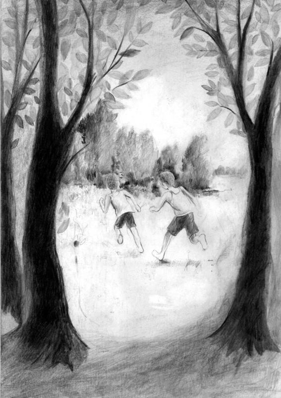 『夏休み』は今から３０年前の戦後４０年に書いた私の戦争３部作(『夏休み』『私の青空』『ずっとそばにいるよ』)の１番目の作品です。その時の私は考えもしませんでしたが、戦後７０年となった今も『夏休み』は多くの学校で上演され続けています。ただ時代の流れとともに、私自身、作品の一部に違和感を感じるようになってきたのです。今回、戦後７０年を意識して全体的に書き直しを行いました。また、「もう少し作品だとだと上演できるのに」という声に応えて元の作品を大胆にカットして４０分〜４５分で上演できるようにしました。更に戦争３部作の他の２作品・『私の青空』『ずっとそばにいるよ』と内容的につながりを持たせました。高田勇輝とその妹・高田美奈が共通の登場人物です。
さて、『夏休み』のあらすじを紹介しましょう。
戦争の足音が近づく昭和１１年、小学校最後の夏休みを前にした七つ森小学校の６年生達は、雨のように降る流れ星に出合い、それぞれが願いをかけます。スポーツ万能の高田勇輝の願いはオリンピックに出ること。男勝りでオイワと呼ばれている大岩洋子の願いは女優になること。歌が得意な遠野みどりの願いはオペラ歌手になること。勉強大好きの天野満夫の願いは大学でテレビジョンの研究をすることでした。主人公・大場憲一(通称バケ)の願いは「お化けに会いたい」。それを耳にした天野から馬鹿にされます。
そんな個性豊かな子どもたちが最後の夏休みの思い出作りに七つ森に肝試しに出かけます。しかし、突然の夕立に子どもたちは離ればなれになってしまいます。森で大場憲一は少女の姿をした妖怪に出会います。「お化けに会いたい」という彼の願いが叶ったのです。彼女は９年後の未来（昭和２０年）から来たと言います。そして彼女は子どもたちの悲しい未来を語るのでした。 夏休みの最後の日、子どもたちは再び流れ星に願いをかけます。その願いは、叶わぬ願いだと知らずに…
ラストで現在の大場憲一が登場します。彼は澄み切った夏の空を眺めます。どこまでも青い夏の空に浮かぶ夏休みの思い出は楽しく、そして切ないのです。
『夏休み』は戦争の足音が近づく昭和１１年の子ども達を７０年後の現代から回想することによって描いた作品です。切なさに思わず涙がこぼれてしまう、そんな劇を上演したい人におすすめします。
◆第十六回創作テレビドラマ脚本公募（NHK後援）佳作一席受賞作品。(選評…その発想は面白く、不思議な魅力を湛えている)
◆第９回全国中学校文化祭(全国大会)神奈川大会参加作品
脚本「夏休み」を途中まで読んでみたい方は次をクリック ●
私の青空(『青空』戦後７０年バージョン)
キャスト メイン１１名 その他 10人くらいまで可
上演時間 50分
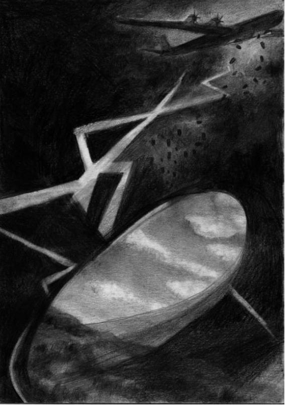 戦争３部作の２作目に当たるのが『私の青空』です。この劇のもととなる『青空』は、戦後６０年に書いたものです。「戦争そのものを描かず、戦争を語るドラマを創りたい」、そんな思いから現代から戦時中を見つめる作品を創りました。しかし、戦後７０年を越えた今、当時現代として描いた部分が１０年前という過去となってしまったのです。戦後７０年の今を描きたいという思いで大幅に書き直しをしたのがこの『私の青空』です。
以前の作品にはもう一つの欠点がありました。それは舞台が女子校だということです。そのために文化祭で上演する際に、男子を登場させることができないという問題が生じていました。その問題を解消するために、今回の舞台は七つ森学園という共学の学校にしたのです。戦闘機が大好きな翼という少年を重要な役として加えました。
この作品の舞台は戦争の展示物に囲まれた教室です。この劇を上演するためには、みんなが協力して戦争について調べ、展示を創らなければなりません。上演に関わった人達は、ただ劇を上演する以上に戦争に迫ることになります。
さて、『私の青空』のあらすじを紹介しましょう。 台風接近のため全員下校となった七つ森学園の３年１組の教室で、展示大賞を目指し、隠れて「太平洋戦争」の展示を進めている生徒たちがいました。「子どもがまだ帰宅していない」という親からの電話で、生徒達は先生に見つかります。しかし、予想を上回る台風の急接近により、生徒達と先生は学校に閉じ込められてしまうのです。
自らが創った戦争の展示の数々、空腹、爆撃のように響き渡る雷、雷による停電。そんな状況の中、生徒達は戦時中の子ども達と自分自身を重ね合わせていきます。
生徒達は戦争当時この学校の生徒だった高田美奈さん(『夏休み』の登場人物・高田勇輝の妹)の体験談を暗闇の中で読み進めていきます。体験談が空襲で学校が燃えた場面にたどり着いた時、彼らの心は大きく揺り動かされるのでした。
このドラマのタイトルは『私の青空』ですが、劇中の天気は始めから終わりまで嵐です。しかし、この劇のタイトルは『私の青空』でなくてはならないのです。その理由はラストシーンにあります。
『私の青空』は『夏休み』『ずっとそばにいるよ』と繋がりを持った作品です。
戦争を現代の視点から描きたい。『私の青空』はそんな思いで書いた現代の中学生による現代の中学生のための戦争劇です。
◆２００７年子どもが上演する脚本募集(日本演劇教育連盟) 入選
辰島幸夫氏の選評(抄)…現代の中学生が太平洋戦争を学ぶ劇づくりでは、よくあのころにタイム・スリップするプロットを考えがちだが、このルーティーンを避けて戦時を実感させた「青空」は見事だった。
◆２００６関東中学校演劇コンクール
脚本「私の青空」を途中まで読んでみたい方は次をクリック ●
キャスト メイン８名 その他 ２人〜５人くらいまで可
上演時間 50分〜55分
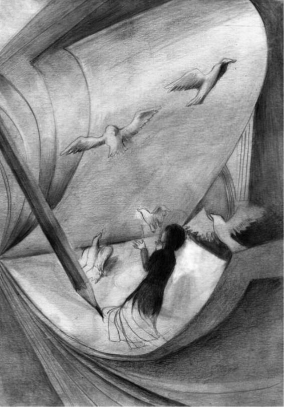 戦争３部作の３作目に当たる作品です。そしてこれは現代の中学生が制服で演じる太平洋戦争を描いた劇です。見た目からどうしても大人にはなりきれない中学生が、軍服を着て大人のまねをするのではなく、中学生が中学生であることを観客に堂々と示して演じられる戦争の劇です。スカートをはいた女子が大人の男性を演じることもある戦争の劇です。
登場人物は沖縄で開催される中学校演劇の全国大会出場を目指す演劇部の生徒たち。その演劇部が上演する劇のタイトルは『勇気』。元・演劇部顧問の高田弥生が祖父である高田勇輝から聞いた話をもとに創った劇です。そこに描かれているのは沖縄で行われた特攻です。練習時間を確保するためにみんな舞台衣装に着替えず制服のまま練習します。
演劇部部長の京花はどんなことがあっても、地区大会を突破して沖縄で開催される全国大会に出場したいと思います。彼女は繰り返し「全国のため」という言葉を口にします。彼女が劇の中で演じるのは、部下に沖縄での特攻を迫る上官役。その上官が繰り返し口にするのが「お国のため」という言葉です。「全国のため」という言葉と「お国のため」という言葉の持つイメージが重なるとともに、京花自身とその京花が演じる上官が重なっていきます。そして彼女が率いる演劇部は戦時中の軍隊のようになっていくのでした。
そのことに気がついた高田弥生の弟・正彦は、勇気を出して京花と向かい合います。そして、正彦は京花がそこまでして全国を目指す本当の理由を知るのでした。
さて、多くの学校で上演していただきたいので、あえてラストを書くことにします。劇のラストで、登場人物達が生きている世界は広島に原爆が落とされなかった世界だということが明らかになります。彼らが生きている世界は、私達が生きている現代のパラレルワールドだったのです。そして、そのパラレルワールドは、戦争３部作の『夏休み』『私の青空』では特攻で死んでしまった高田勇輝が、死ななかった世界でもあるのです。更に、この物語は幽霊の登場する物語でもあります。登場人物のひとりが実は幽霊なのです。そして、この物語はよくある願いがかなって消えていく幽霊の物語ではありません。もしも願いがかなっても、ずっとそばにいる幽霊の物語なのです。
終戦間際、高田勇輝は不思議な少女と出会いました。そのことから特攻を志願することを思いとどまったのです。そして、家族のもとに生きて帰ってきたのです。高田勇輝がその少女と出会ったというほんのちっぽけなことが、世界を大きく変えた。そんなことは絶対あり得ないことでしょうか。
中学生が戦争の劇を演じるなどということは、広い世界の中のほんのちっぽけなことです。でも、そんなほんのちっぽけなことが戦争のない世界を生み出す糸口になることがあるかもしれない。そんな、誰もが「冗談だよね」と笑い出してしまうような夢を、胸の奥底に秘めて創ったのがこの『ずっとそばにいるよ』です。
中学生が表現する戦争のドラマが、大人が表現する戦争のドラマよりも胸に迫ることがあるという可能性を信じることができる人に上演していただきたいと思っています。
◆２０１６関東中学校演劇コンクール 銀賞
脚本「ずっとそばにいるよ」を途中まで読んでみたい方は次をクリック 「ずっとそばにいるよ」
キャスト メイン８名、 その他 １５人くらいまで可
上演時間 ５０〜６０分
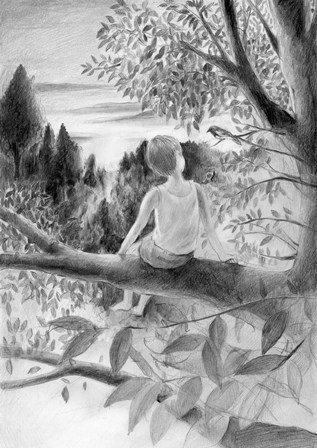あらすじ
恵子は七つ森がレジャーランドになる計画を知り、それを阻止するために『七つ森』という創作劇の上演を企画します。しかし計画が始まってすぐ病に倒れます。それを引き継いだひろみは、自分では演出は無理と感じ、中学の時同級生だった恵子に演出を依頼しますです。
『七つ森』の舞台は、幻の銀の鷹が棲む森。森で生まれ育った少年ハヤト(銀の鷹の化身である母に育てられた)と、その森を我がものにしようとする瑠璃姫との戦いが描かれます。
ラストはハヤト達の勝利で終わるというハッピーエンドです。
第一部はその練習風景(制作過程)が描かれます。主役を演じる少年隼人はアメリカから日本に来たばかりで、漢字が苦手です。そのため台詞間違いを多発します。
子ども達が中心の集団はやる気だけはあるのですが、毎日毎日失敗ばかり、そして失敗が解消されないまま本番当日を迎えます。 第二部は『七つ森』の実際の上演です。上演中も、次から次へとトラブルが起こります。台詞忘れに、台詞間違い、予期せぬ舞台上での転倒…などなど。
そのトラブルによって劇は予定されていた内容と少しずつ違ったものとなっていくのです。 ラストシーンではトラブルのフォローが裏目に出て、主人公のハヤトが銃で撃たれる状況が生まれてしまいます。
うろたえる子ども達。このままではラストシーンで主人公のハヤトが死ぬことになってしまいます。
最終的に、子ども達は、用意されてたハッピーエンドとは違った、感動的なラストシーンにたどり着くのでした。
ラスト５分前まで笑いの笑いの連続で劇は進んでいきます。そしてラストはどんでん返しが待っている。『七つ森』はそんな楽しさいっぱいの劇です。
◆子どもが上演する脚本募集(日本演劇教育連盟) 入選 その時の題名は「化鳥伝説」
◆２０１０関東中学校演劇コンクール金賞受賞作品(久喜市立久喜中学校演劇部)
脚本「七つ森」を途中まで読んでみたい方は次をクリック ●
キャスト メイン１０名、 その他５名程度
上演時間 ５０〜６０分
 あらすじ
あらすじ
「とも」は小林知輝と森山智花と友川大空(そら)の３人の「とも」の物語であり、友の物語でもあり、共に生きる物語でもあります。
３人は七つ森総合病院に入院しています。知輝は七つ森中学校の２年生で演劇部員です。智花は隣の七つ森女学院の２年生で演劇部員です。智花が創った『虹の彼方に』という作品は、東関東中学校総合文化祭で最優秀賞を受賞しました。また彼女は最優秀脚本賞を受賞していました。知輝はその作品に感動し、脚本を手に入れて、暗記するほどそれを読み込んでいました。
ひょんなことから３人の「とも」が病院内で出会い、知輝は智花の目の前で大空君(難病で入院している小学生)に『虹の彼方に』がどんな物語か話すことになります。そして知輝の見事な語り口に、大空君だけでなく作者である智花も物語世界に引き込まれていくのです。『虹の彼方に』は病院に入院している子どもたちの物語です。そして、そのラストシーンでは登場人物の一人の少年が、みんなに感動的なメッセージを残して天国=虹の彼方に昇っていきます。
虹の彼方にいく少年の病気は大空君の病気と同じでした。大空君は、泣きながら病室を出て行きます。多くの人を感動させた『虹の彼方に』は、同じ病気と闘っている大空君を苦しませることになったのです。智花は知輝の目の前で最優秀脚本賞の賞状を破きます。知輝はそれを必死に止めます。この時、二人の間にはほのかな恋が芽生えていました。
「とも」は、死を感動の道具として使う多くのドラマへのアンチテーゼとして創られたものです。この物語は「共に生きる」物語としてラストに向かって進んでいきます。
「とも」は難病の子どもを題材とした劇ですが、よくある難病ものにはしないという強い思いから生まれた劇です。「とも」は難病ものを扱った劇を創作した少女の物語です。
◆２０１１関東中学校演劇コンクール会長賞受賞作品(久喜市立久喜中学校演劇部)
脚本「とも」を途中まで読んでみたい方は次をクリック ●
キャスト メイン１５名、 その他多数出演可
上演時間 ５０〜６０分
 あらすじ
あらすじ
姫野小百合は七つ森中学校にやってきた転校生。前の学校で演劇部に所属していた小百合は、演劇部が上演する『怪談の多い料理店』を観に行きます。『怪談の多い料理店』は、６つの怪談がシェフたちによって紹介されるオムニバス形式の劇です。
６つの怪談のタイトルは、第一話「かまいたち」、第二話「トイレの鼻毛さん・予告編」、第三話「木霊」、第四話「山姥の微笑み」、第五話「天邪鬼」、第六話「幻の森」。
「幻の森」の途中で劇は終わります。登場人物の一人である茂美が退部したいと言い出したためです。
劇に興味を持った小百合は演劇部に入部し茂美の代わりに静という少女を演じることにします。
彼女が劇の練習をしている時、七つ森中学校の七不思議と呼ばれている不思議な現象が起こります。そして、現実世界と今まで上演してきた劇が重りあっていきます。そして、七つ森中学校演劇部によって上演された６つの怪談が現実世界で一つの物語に収斂されていきます。小百合はそこで静という美しい少女と天邪鬼という醜い妖怪の悲しい物語と出合います。そして、七つ森中学校の七不思議の正体が明らかになるのです。
これはディズニー映画「美女と野獣」を観た時(そしてボーモン夫人による原作を読んだ時)、ラストで野獣が王子となる結末に「結局結ばれるのは王子様なんだ」と感じた気持ちが創作意欲を刺激して生まれた作品です。
「 王子様にはなれない醜い妖怪が人間の少女と愛し合うことができるのか」。
『怪談の多い料理店』は、そんな問いから生まれたもう一つの「美女と野獣」の物語です。
脚本「怪談の多い料理店」を途中まで読んでみたい方は次をクリック ●
キャスト メイン３名、 その他７名程度
上演時間 ５０〜６０分
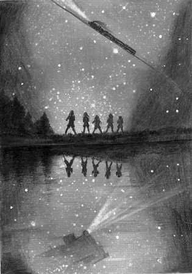あらすじ
『銀河鉄道の夜』に登場するザネリ。『銀河鉄道の夜』を扱った劇を何度も観ました。その多くが、ザネリを極悪人として描いていました。私は思うのです。「確かにザネリがジョバンニにした事は悪いことだ。しかし、それがザネリのすべてではないはずだ。だからカムパネルラはザネリと友だちでいたんだ。カムパネルラが彼を助けて死んでしまった後、ザネリはきっとずっとそのことを背負い続けて生きただろう」と。そんな思いを抱きつつ創った物語が『ザネリ』です。
主人公の隼人は姉の舞とともに、アメリカから日本に戻ってきます。母が火事が原因でなくなったからです。母は炎に包まれた隼人を助けるため火の海に飛び込み、隼人を助けそしてなくなったのでした。
隼人が通っている七つ森小学校の５年生は、この夏『銀河鉄道の夜』を上演します。そのためのオーディションが行われるのですが、誰もザネリはやりたがりません。そして最終的に、隼人がザネリをやることになります。
隼人は自分自身をザネリと重ねます。そんな隼人を気にかける花や鳥に詳しいひろみという人物。隼人はひろみを女性だと思っていますが、実はひろみは日本に残った隼人の兄だったのです。ひろみは自らが書いた『もう一つの銀河鉄道の夜』を隼人に渡します。それはカムパネルラが生還する物語でした。それを読んだ隼人は…
自らの命を投げ出して人を救った人の話はたくさんあります。この物語は救った側ではなく、救われた側のその後を描いたドラマです。
◆２０１１関東中学校演劇コンクール優秀賞受賞作品(久喜市立久喜中学校演劇部)
脚本「ザネリ」を途中まで読んでみたい方は次をクリック ●
キャスト メイン３名、 その他１０人程度出演可能
上演時間 ３０分
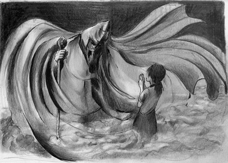あらすじ
東明子はプロの脚本家、ネットいじめについての脚本を依頼され現在それを執筆しています。彼女は娘の麻由美に途中まで書いた『魔術』という作品を読んでもらいます。『魔術』は芥川龍之介の『魔術』に登場するマティラム・ミスラの現在を描いたものです。
◆ミスラのもとに網野亜美という少女が相談に訪れます。ネットいじめで苦しんでいる美里を助けてほしいというのです。最初は要求を断るミスラでしたが、最終的には亜美の望みを叶えてやるという約束をします。◆
その続きは母が娘・麻由美に構想を語っていく形で紹介されます。
◆亜美のもとに美里から電話がかかってきます。ネット上に書かれていた書き込みがすべて消えているというのです。美里へのいじめはなくなったのです。学校に行くとクラスのみんなが亜美に対して口を聞こうとしません。助けてあげた美里までもそうなのでした。家に帰った亜美は愕然とします。ネット上に亜美に対しての誹謗中傷を発見したのです。美里のいじめは亜美に移ったのです。◆
麻由美は母に亜美を助けてほしいと懇願します。実は麻由美は友だちの誹謗をネット上に書き込んでいたのです。そして、それを消そうとしても自分ではどうしようもできなくなっていたのです。麻由美は亜美だったのです。それを知った母は…
◆第１回埼玉県子ども人権フォーラムにおいてネットいじめを題材にした劇の上演を依頼されて創った作品です。ハッピーエンドではない、続きは劇を観たそれぞれの人たちの心の中で続いていくといったエンディングを用意しました。
脚本「魔術」を途中まで読んでみたい方は次をクリック ●
森の交響曲(シンフォニー)
キャスト メイン１２名、 その他多数出演可
上演時間 ５０〜６０分
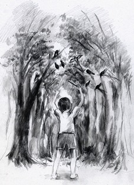あらすじ
森野美樹の母・響子は著名な音楽家。彼女は七つ森を題材にした、「森の交響曲」と題したシンフォニーの作曲に取り組みます。美樹はそんな母に自分と音楽のどちらが大切か迫り、母の作っていた楽譜を破いてしまいます。そして母と一言も口をきかなくなってしまうのです。
ある日、美樹のもとに「森の交響曲」という母が創った戯曲が送られてきます。それは美樹という少女が「森の交響曲」という戯曲を読んでいるうちに、その世界に入っていくという内容でした。
美樹はそれを読んでいるうちに本当に自分がその世界にいるような不思議な気分を体験していきます。
森の少年カノンは「森の交響曲」という音楽を物語の中で創っています。第一楽章は「囀り」。カノンが第一楽章を作り終えたとき、森の中から鳥の囀りと鳥の姿が消えます。そしてそれと同時にその記憶も失われるのです。それを盗んだのはトーマという、
変幻自在で神出鬼没のなにものかであることが明らかになります。 カノンは第二楽章「風」、第三楽章「闇」、第四楽章「言霊」を完成させていきますが、その楽章が完成するとともにその音と記憶が森の中から消えてしまうのです。
第四楽章では登場人物も次から次へと消えていき、最後に美樹が一人森に残ります。彼女は物語の中から戯曲を読んでいる現実の美樹に助けを求めます。戯曲の中の美樹は現実の美樹によって助けられます。それが戯曲の結末でした。
戯曲を読み終えた美樹の前に母が現れます。戯曲は終わってはいなかったのです。母の口から語られる、戯曲の続きである「第五楽章」の表題は「美樹」。それはどんな内容なのでしょう、そしてトーマの正体は…。現実世界で「森の交響曲」が続いていきます。それは結末の予想できない現在進行形の劇なのでした。
劇が終わっても交響曲は終わらず、観客の心の中で続いていくことでしょう。
久喜市の子ども芸術祭で上演された際に、千人を超える観客を集め大ホールを満員にした作品です。主役は一人三役を演じるという難しい役どころですが、それだけにやりがいのある作品だと思います。
キャスト メイン８名 その他 ２人〜３０人くらいまで可
上演時間 45分〜60分(４０分で上演できるバージョンが、脚本集３に収録されています)
 戦争の足音が近づく昭和１１年、七つ森小学校の子どもたちは最後の夏休みを迎えようとしていました。夏休みを前にして、子どもたち流れ星に願いをかけます。スポーツ万能の高田一郎の願いはオリンピックに出ること。男勝りでオイワと呼ばれている大岩洋子の願いは女優になること。歌が得意な遠野みどりの願いはオペラ歌手になること。勉強大好きの天野満夫の願いは大学でテレビジョンの研究をすることでした。主人公・大場憲一(通称バケ)の願いは「お化けに会いたい」という子ども子どもしたもので、それを耳にした天野から馬鹿にされます。
戦争の足音が近づく昭和１１年、七つ森小学校の子どもたちは最後の夏休みを迎えようとしていました。夏休みを前にして、子どもたち流れ星に願いをかけます。スポーツ万能の高田一郎の願いはオリンピックに出ること。男勝りでオイワと呼ばれている大岩洋子の願いは女優になること。歌が得意な遠野みどりの願いはオペラ歌手になること。勉強大好きの天野満夫の願いは大学でテレビジョンの研究をすることでした。主人公・大場憲一(通称バケ)の願いは「お化けに会いたい」という子ども子どもしたもので、それを耳にした天野から馬鹿にされます。
そんな個性豊かな子どもたちが最後の思い出作りに七つ森に肝試しに出かけます。しかし、突然の夕立に子どもたちは離ればなれになってしまいます。子どもたちは森でカシャボ、ぬりかべ、傘化け、山父といった妖怪に出会います。大場憲一が出会ったのは、青柳こだまという少女の姿をした木の精(こだま)でした。「お化けに会いたい」という彼の願いが叶ったのです。彼女は９年後の未来（昭和２０年）から来たと言ます。彼女は七つ森の悲しい未来を語るのでした。そして彼女は言います、「お化けが怖いと思えた時代は幸せだった」と…
夏休みの最後の日、子どもたちは再び流れ星に願いをかけます。その願いは、叶わぬ願いだと知らずに…
ラストで現在の大場憲一が登場します。彼は澄み切った夏の空を眺めます。どこまでもどこまでも青い夏の空に浮かぶ夏休みの思い出は楽しく、そしてどうしようもなく切ないのです。
『夏休み』は思い切り笑って、幻想的な世界に浸って、ラストシーンで懐かしさと切なさで思わず涙がこぼれてしまう、そんな劇を上演したい人におすすめします。
◆第十六回創作テレビドラマ脚本公募（NHK後援）佳作一席受賞作品。(選評…その発想は面白く、不思議な魅力を湛えている)
◆『夏休み』は日本各地の小・中・高校のクラス、演劇部、劇団、青年会議所の企画公演(群馬県沼田市)等で上演されています。
脚本「夏休み」を途中まで読んでみたい方は次をクリック ●
青空 ※戦後７０年バージョンが脚本集３に収録されています。
キャスト メイン１１名 その他 10人くらいまで可
上演時間 ５０分
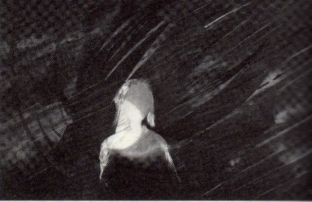「戦争そのものを描かず、戦争を語るドラマを創りたい」、そんな思いが創らせたのがこの『青空』です。台風接近のため全員下校となった七つ森女学院中学の三年F組の教室で、展示大賞を目指し、隠れて「太平洋戦争」の展示を進めている生徒たちがいました。「子どもがまだ帰宅していない」という親からの電話で、子どもたちは先生に見つかります。しかし、台風の予想を上回る急接近により、子どもたちと先生は学校に閉じ込められてしまうのです。自らが創った戦争の展示の数々、空腹、爆撃のように響き渡る雷、雷による停電。そんな状況の中、子どもたちは戦時中の子どもたちと自分自身を重ね合わせていきます。
子どもたちは戦争当時この学校の生徒だった花さんの体験談を暗闇の中で読み進めていきます。戦時中、灯火管制の暗闇の中で花さんが聴いた禁止された音楽「私の青空」を、子どもたちも暗闇の中で聴きます。子どもたちはまるで自分たちが今、戦時中の子どもたちになったような気持ちになっていきます。体験談が空襲でこの学校が燃えた話にたどり着いた時、彼女らの心は大きく揺り動かされるのでした。
このドラマのタイトルは「青空」ですが、天気は嵐のままで、一度も晴れたりはしません。しかし、この劇のタイトルは『青空』でなくてはならないのです。その理由はラストシーンにあります。
※『青空』は『夏休み』と繋がりを持った作品です。ここで登場する花さんは『夏休み』の登場人物・高田一郎の妹です
戦争を現代の視点から描きたい。そして、劇を通して戦争を考えたい。それでいて感動のある劇がしたい。『青空』はそんな人たちに上演していただきたい劇です。
◆２００７年子どもが上演する脚本募集(日本演劇教育連盟) 入選
ふじたあさや氏の選評…よくある戦時タイムスリップもの、回想ものにならず、現代のリアリティにこだわりきった結果、少女たちの目線のまま花さんを通して戦時中のリアリティに迫った。ちょっとピントのずれたようなサチが「青空」という設定に、作者の目がある。評価したい。
辰島幸夫氏の選評(抄)…現代の中学生が太平洋戦争を学ぶ劇づくりでは、よくあのころにタイム・スリップするプロットを考えがちだが、このルーティーンを避けて戦時を実感させた「青空」は見事だった。
◆２００６関東中学校演劇コンクール最優秀賞作品(久喜市立久喜中学校演劇部)
脚本「青空」を途中まで読んでみたい方は次をクリック ●
キャスト メイン１２名
上演時間 ５０分
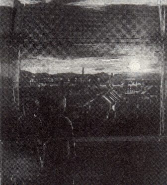 『なっちゃんの夏』はいじめを扱ったドラマです。これを創った当時、私は学校で紹介される映画やアニメで描かれるいじめが、あまりにもきれい事で解決されることに不満を持っていました。そして、きれい事ではない、それでいてまったく希望のかけらもないような作品ではないドラマを創ってみたいと思い、この作品を書きました。登場人物は、『なっちゃんの夏』を上演する七つ森女学院中学の演劇部の少女たちです。主人公のなっちゃんを演じる若葉は、自身もクラスでいじめにあっていました。ただ、そのことを誰にも相談することができません。彼女は、この劇の演出を担当している冬美に自分の友だちの話として、彼女自身の話をします。そして、アドバイスを求めます。若葉は自分をいじめている人たちが『なっちゃんの夏』をみて、何か感じるのではないかと期待していたのです。本番、若葉はラストシーンで彼女が言うことになっていた「また明日」という言葉が言えず、「さようなら」といって舞台を飛び出します。
若葉と二人きりになった放課後の教室で、若葉は冬美に苦しい思いを語ります。若葉の気持ちを理解した冬美は、自分自身の大きな秘密を若葉に語るのでした。
※『なっちゃんの夏』は『青空』の一年後の七つ森女学院中学のドラマです。登場人物が重なります。
『なっちゃんの夏』は道徳的ないじめのドラマに嫌気がさしてしまった、とはいっても、ただ悲惨なだけの劇はやりたいないという人におすすめします。
◆２００５年子どもが上演する脚本募集(日本演劇教育連盟) 準入選
◆２００５関東中学校演劇コンクール優秀賞受賞作品(久喜市立久喜中学校演劇部)
脚本「なっちゃんの夏」を途中まで読んでみたい方は次をクリック ●
キャスト メイン５名 メインに準ずる役７名(変更可能)
上演時間 ５０分
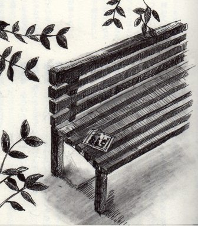『ときめきよろめきフォトグラフ』には、周りからなかなか理解してもらえない二人の少女が登場します。一人は主人公である七つ森中学写真部の２年生・鶴田夏美。彼女は生き物の写真を撮ることが好きです。そして、今一番ときめきを感じているのがタカの写真を撮ることなのです。かわいい小鳥を襲うタカを好きだという気持ちは理解されないと思い、そのときめきを誰にも話していません。もう一人は数学が大好きで、学年一番を取り続けていた福沢ゆき絵。彼女は今回初めて一番から落ちてしまい、その後家出をします(実は家出ではなく学校出なのですが)。理由は他にあるにもかかわらず、彼女は一番から転落したから家出したのだろうと誤解されます。そんな周りから理解されない思いを共有することで二人の心がふれあいます。
このドラマの中で写真部の少女達はコンクールで賞を取るために、ときめき探しをします。愛と聡美のときめきはLOVE。茉莉のときめきは特ダネを撮ること。ある日、茉莉は特ダネをものにします。それは、少女の交通事故。しかし、その事故にあったのは大切な仲間の一人である夏美でした。茉莉の心は揺れます。
その事故で目を傷つけ、ときめきであるタカの写真が撮れなくなってしまった夏美。その夏美の代わりにタカの写真を撮るゆき絵。そのゆき絵の撮った写真(実はピンぼけ写真なのですが)を見るというときめきを胸に、夏美は目の手術を受けます。ラストで二人はどんなときめきを手に入れることができるのでしょうか。
笑いあり、涙ありの劇がやりたい。それでいて中学生の少女たちの揺れ動く心をていねいに表現したい。『ときめきよろめきフォトグラフ』はそんな人たちにおすすめします。
◆第６回フジテレビヤングシナリオ大賞最終選考(更にラスト９編に残る)
◆２００４関東中学校演劇コンクール 最優秀賞受賞作品(久喜市立久喜中学校演劇部)
脚本「ときめきよろめきフォトグラフ」を途中まで読んでみたい方は次をクリック ●
キャスト メイン３名 その他５人〜１５人くらいまで可
上演時間 ５０分〜６０分
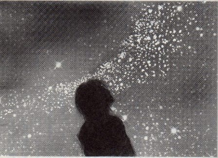◆夜空から星がなくなった世界。そんな世界で「星が見たい」という病気の弟の願いをかなえるために、シホは星を捜しに旅立ちます。果たして星は見つかるのでしょうか？そしてこの世界に再び降るような星空が戻ってくるのでしょうか？
◆
以上はこの劇の主人公・星川ひかりの創作劇『降るような星空』のあらすじです。前半はその最終リハーサルの中で劇中劇『降るような星空』が紹介されます。リハーサル終了後、ラストシーンでのひかりの絶叫について対立が起こります。沙也香は囁くような声の方が劇が良くなると主張します。しかし、ひかりは「これだけはゆずれない」と叫ぶことにこだわります。
そんな中、台風が上陸し、劇は中止となってしまいます。失意のひかりは嵐の中、ホールの外に飛び出していきます。 この４月に七つ森中学校に転校してきた彼女が、ここまで劇の上演に執念をかけるわけは何なのでしょうか？またラストで叫ぶことにこだわるわけは？そのわけを知った劇の仲間は、嵐が過ぎ去った停電で真っ暗になった星空のもと、彼女を捜して再びホールに向かうのでした。
降るような星空の下で演じられる『降るような星空』のラストシーン。囁くような声で台詞を言うひかりに沙也香が言います。「叫びなよ」。その声に励まされ、ひかりは星空に向かって叫びます。ひかりがラストで星に向かって叫ぶことにこだわるのには、どんなわけがあったのでしょう。
※『降るような星空』は『青空』と同じ日に七つ森の別の場所で起こったドラマです。
大爆笑の連続、それでいてラストは涙がこぼれる。そんなチャップリンの喜劇のような劇がやりたい。『降るような星空』はそんな人達におすすめします。
◆１９９３年子どもが上演する脚本募集(日本演劇教育連盟) 晩成書房戯曲賞・特賞(ふじたあさや氏選評(抄)…特賞の斉藤俊雄さんの「降るような星空」は、子どもたちの目から観たら抜群のおもしろさを発揮すると思います。非常に巧妙に創られていて、ねらっているテーマを含めていい)
◆２００７関東中学校演劇コンクール 優秀賞受賞作品(久喜市立久喜中学校演劇部)
脚本「降るような星空」を途中まで読んでみたい方は次をクリック ●
キャスト メイン６名 ※オープニングで演劇部員が登場するバージョンあり(たくさん登場させることができる)
上演時間 ５０分
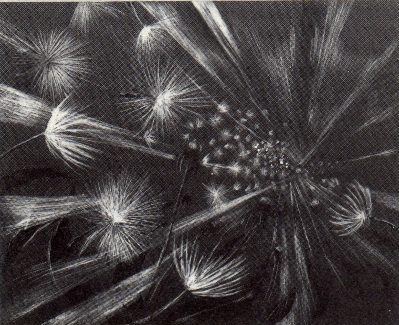 『春一番』の舞台は七つ森中学校の放送室。登場人物は、受験直前の２月になっても部活を引退せずに放送を続けている放送部員たちです。誰にでも優しくその優しさのために傷つく由美子。その親友であるみゆき。クラスに行くことができず放送室で学校生活を送っているひろみ(ひろみは今まで一度も放送をしたことがありません)。問題ばかり起こしている凉子。
由美子はみゆきは七つ森高校に一緒に行くと決めていました。しかし、合格発表にみゆきの番号はありませんでした。その失意の中でみゆきはひろみのことを傷つけてしまいます。みゆきは次の日から学校を休みます。卒業式の前日、みゆきにひろみがメッセージを録音して送ります。「あたし、明日の卒業式、教室に行きます。教室でみゆきちゃんのこと待っています。みゆきちゃんが来てくれると思うと教室に行ける気がします。怖いけど行ける気がします。だから教室に来てください…」それはひろみの初めての放送体験でした。
『春一番』に描かれているのは４人の少女の友情と言っていいと思います。ただ、私はこのドラマを単なる友情物語にはしたくないと思いながら描いていきました。登場人物にはやさしい風は吹きません。彼女らに吹く風は向かい風です。しかし、その向かい風は木枯らしではありません。彼女らに吹く風は春一番です。強い砂混じりの風、しかし、暖かくもある風。そんな風をドラマの最後の最後まで吹かせたかったのです。
ラストシーンで４人は春一番に向かって歩いていきます。
※『春一番』は『ときめきよろめきフォトグラフ』に繋がるドラマです。
『春一番』は中学生の少女たちの揺れ動く心、ガラス細工のように繊細な心を表現したいと思っている人たちにおすすめします。人の温かさに触れ、おもわず涙がこぼれてしまう、そんな劇となるはずです。
◆２００８年子どもが上演する脚本募集(日本演劇教育連盟) 入選
◆２００８関東中学校演劇コンクール最優秀賞受賞作品(久喜市立久喜中学校演劇部)
脚本「春一番」を途中まで読んでみたい方は次をクリック ●